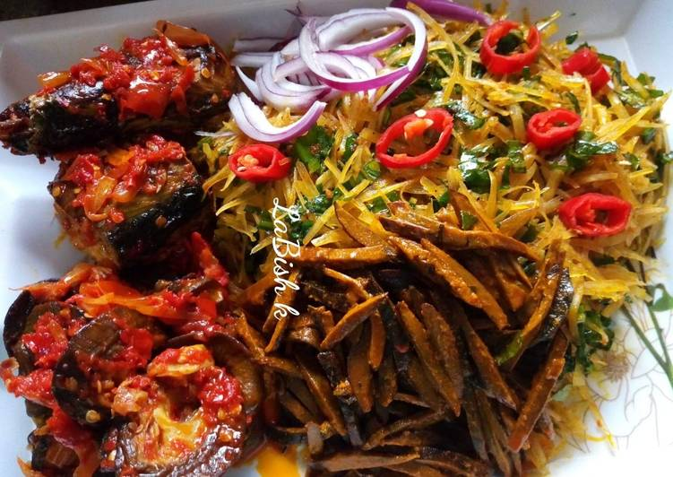

ABACHA RECIPE AND PREPARATION PROCESS
Abacha is a Traditional delicay from the Eastern part of Nigeria, it is made from cassava tubers and is highly nutritious, it can be made cold and slightly warm, Preparing Abacha is very simple.
Here we will learn how to make the cold and easy method of preparing abacha

Description of Preparation Process
cassava
Palm Oil
Seaoning cube
Fish
Fresh peppers
Onions
Potash
Ogiri
Ehuru
Crayfish
Salt
Directions
Step 1
If your cassava was just harvested from the farm,
peel of the skins of the cassave and grate to your desired shape using a special tool called nrikwo nrikwo, and continue to step 2
else if you can get already grated and dried cassava from your nearby store then soak with hot water till it beacomes soft,
drain out the water and set aside. then move to step 3
Step 2
Wash the cassava to remove the excess starch.
Step 3
In a seperate bowl, add some palm oil, and potash and stair very well, until you get an orange thich consistency
Step 4
Next, you add your seasoning cube, fresh peppers, salt to taste, onions, crayfish, ugba, Ehuru, Ogiri and combine properly
Step 5
Next you pour in your washed cassava into your boil of palm oil and other ingredients and mix properly
Step 6
In a frying pan add some oil, either vegetable or palm oil, and fry your already seasoned fish
Step 7
Your abacha is ready to enjoy, serve with palm wine and Enjoy!